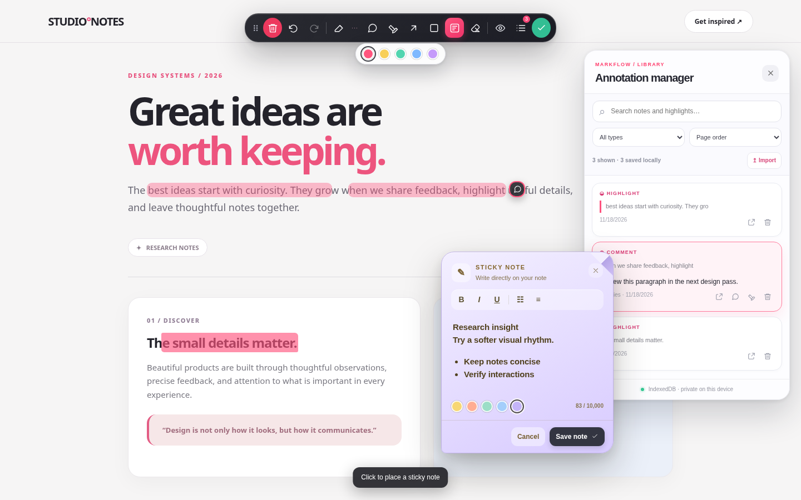
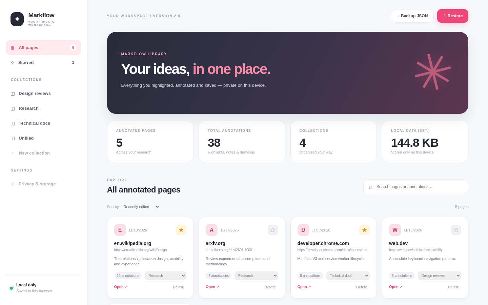
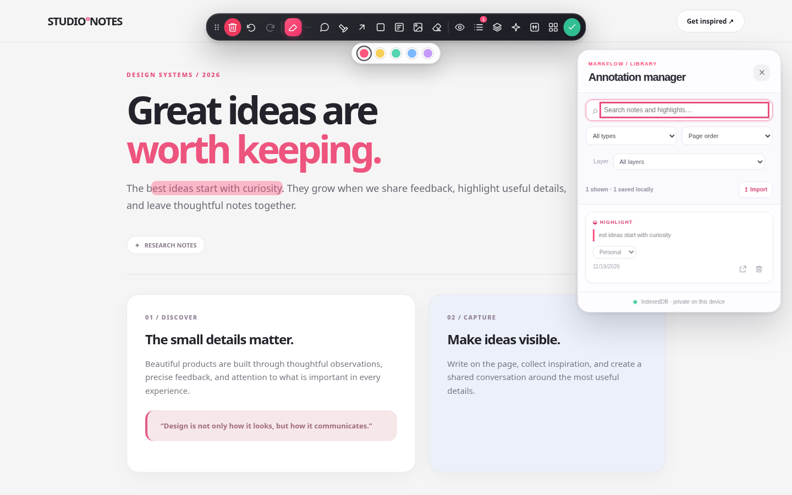

01 / CAPTUREKeep the moments
Keep the moments
that make you think.
Fluid highlights, comments that stay in context, and rich sticky notes—right where your ideas begin.
HighlightsCommentsSticky notes

Highlight what matters. Leave ideas in the margins. Turn any supported webpage into your own thoughtful workspace.
Free & open source · Works offline · No account
Good ideas often begin with a moment of attention.
We move through so much information every day. But sometimes, the smallest detail can change how we see the whole picture.
Make a little room to collect the details, questions, and unexpected connections that deserve a second look.
Small, thoughtful tools that appear when you need them and disappear when you don’t. Markflow makes reading active without making it complicated.
Fluid highlights, comments that stay in context, and rich sticky notes—right where your ideas begin.

Search across annotated webpages, collect favorites, organize your library, and jump right back into the details.

There’s a lot of care in the little details. Take a closer look at what you can do with Markflow.

Give interesting passages a little more attention. Highlight, comment, sketch, and keep a thought beside the text.
See the toolsNo Markflow account. No Markflow cloud database. Just the ideas you choose to keep, stored locally in Chrome.
Read our privacy policyAnnotations live in your browser’s extension-owned IndexedDB—not on a Markflow server.
Create JSON backups when you want to keep a copy or move between profiles.
Exclude exact website hostnames and control where Markflow displays your notes.
Installing through GitHub is free. It’s a manual Chrome extension installation, so there’s no Chrome Web Store account involved.
Get the extensionOpen the latest release. Download the markflow-v2.0-extension-only.zip asset and extract it to a permanent folder.
Go to the extensions settings page and enable Developer mode.
chrome://extensionsChoose Load unpacked, select the extracted folder containing manifest.json, and pin Markflow to your toolbar.
Visit a normal webpage, click Markflow, and highlight something that matters. Your notes save locally.
Yes. Markflow is free and its source is available under the MIT license in the Highlighter repository.
Inside the extension’s IndexedDB database in your local Chrome profile. They aren’t automatically synced between devices. Make a JSON backup before removing the extension or changing browser profiles.
Markflow supports normal HTTP and HTTPS webpages. Chrome internal pages, some PDFs, restricted documents, and certain embedded frames cannot be annotated.
GitHub installations do not auto-update like Chrome Web Store extensions. Download future release ZIPs, replace files in your current unpacked folder, then click Reload at chrome://extensions. Back up your annotations first and keep the same unpacked extension folder to preserve the extension ID.
Make what you read a little more meaningful.
There’s something here worth remembering. ✨